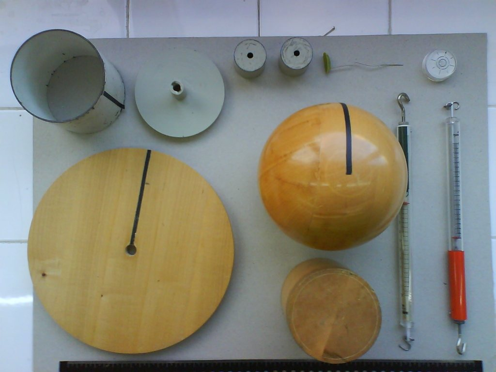
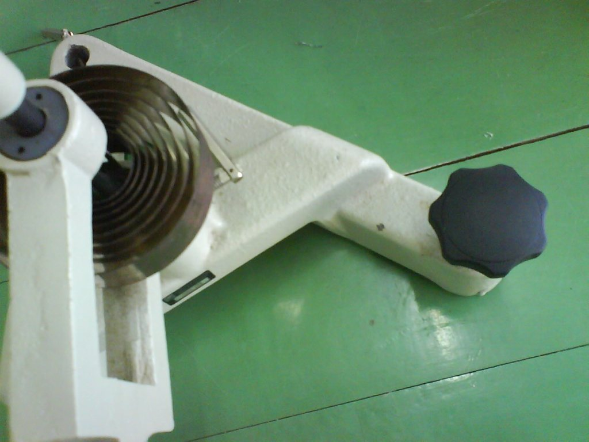
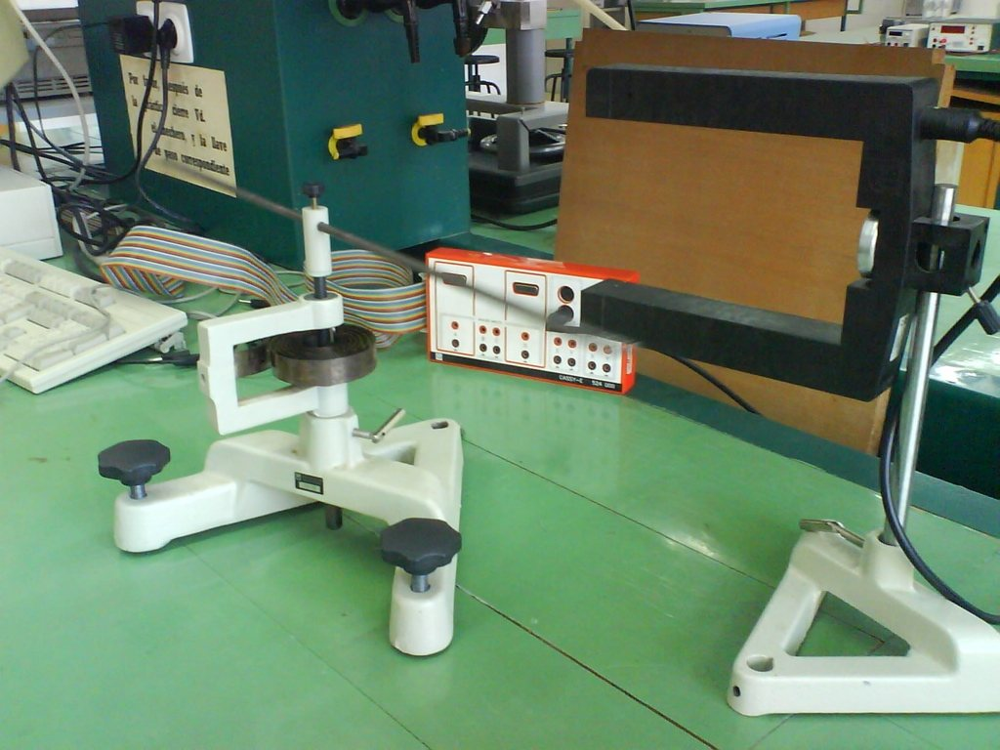
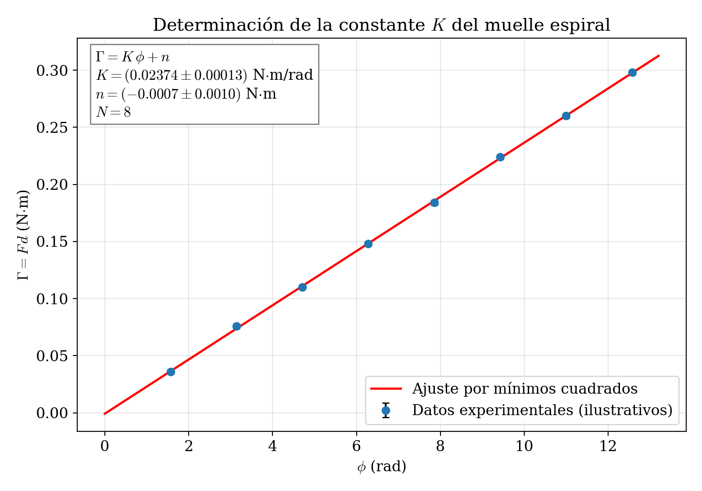
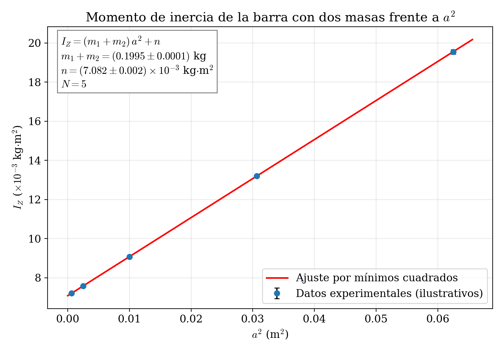

Laboratorio de Mecánica — UNED
2026-03-20
Determinación experimental del momento de inercia de diversos sólidos rígidos (disco, esfera, cilindros macizo y hueco, barra) mediante un péndulo de torsión con muelle espiral. Verificación del teorema de Steiner y estudio de la dependencia del momento de inercia con la distribución de masas.


La relación entre el momento angular \vec{L} de un sólido rígido, en un sistema de coordenadas estacionario con origen en el centro de gravedad, y el momento de la fuerza \Gamma que se le aplica es:
\Gamma = \dfrac{d\vec{L}}{dt} \tag{1}
En general, el momento angular \vec{L} se expresa en función de la velocidad angular \vec{\omega} y del tensor de inercia I:
\vec{L} = I\cdot\vec{\omega} \tag{2}
En el caso particular de que el eje de giro coincida con el eje Z, el momento angular tendrá una única componente que puede expresarse como:
L_{Z} = I_{Z}\cdot\omega = I_{Z}\cdot\dfrac{d\phi}{dt} \tag{3}
donde \phi es el ángulo girado e I_{Z} es el momento de inercia respecto al eje Z. Por tanto:
\Gamma = I_{Z}\cdot\dfrac{d\omega}{dt} = I_{Z}\cdot\dfrac{d^{2}\phi}{dt^{2}} \tag{4}
Si el cuerpo se encuentra sujeto a un muelle en espiral, el momento de la fuerza puede relacionarse con la constante de recuperación del muelle espiral K y el ángulo girado \phi:
\Gamma = F\cdot d \hspace{3cm} \Gamma = -K\cdot \phi \tag{5}
En la expresión anterior, el signo menos indica que el momento es contrario al causado por la fuerza que provoca la deformación del muelle. Si se igualan ambas expresiones, se puede deducir una expresión para calcular la constante de recuperación del muelle K:
\boxed{K = \dfrac{F\cdot d}{\phi}} \tag{6}
Si se mide el momento \Gamma = F \cdot d para varios ángulos de giro \phi, la representación gráfica de \Gamma frente a \phi debe ser una línea recta que pasa por el origen y cuya pendiente es la constante de recuperación K del muelle espiral.
Igualando las expresiones de la Ecuación 4 y la Ecuación 5, se obtiene la ecuación del movimiento:
I_{Z}\cdot\dfrac{d^{2}\phi}{dt^{2}} = -K\cdot\phi \tag{7}
La solución de esta ecuación diferencial es:
\phi(t) = \phi_{0}\cdot\cos\left(\sqrt{\dfrac{K}{I_{Z}}}\cdot t\right) \tag{8}
Esta ecuación representa un movimiento periódico con pulsación \omega:
\omega = \sqrt{\dfrac{K}{I_{Z}}} \tag{9}
La pulsación se puede expresar en función de la frecuencia f o del período T:
\omega = 2\pi\cdot f = \dfrac{2\pi}{T} \tag{10}
Por lo tanto, el período puede expresarse en función del momento de inercia y de la constante de recuperación del muelle espiral:
\boxed{T = 2\pi\cdot\sqrt{\dfrac{I_{Z}}{K}}} \tag{11}
Y, así, el momento de inercia se puede expresar como:
\boxed{I_{Z} = \dfrac{T^{2}}{4\pi^{2}}\cdot K} \tag{12}
De todo lo expuesto se deduce que, conocidos la constante de recuperación angular del muelle espiral (K) y el período de oscilación (T), se puede calcular el momento de inercia de diversos sólidos rígidos.
El periodo medido corresponde a todo lo que oscila: el sólido y el eje, el tornillo y el soporte sobre el que se coloca (la base de la esfera, el plato del cilindro hueco). Si T_0 es el periodo del soporte vacío,
I_{\textrm{sólido}}=\frac{K}{4\pi^{2}}\left(T^{2}-T_0^{2}\right).
Medid T_0 para cada soporte (si no oscila bastante, montadlo con la barra y restad la barra) y decid en el informe si la corrección es despreciable.
Los momentos de inercia teóricos de los sólidos utilizados en esta práctica, respecto a un eje que pasa por su centro de gravedad, son:
\boxed{I_{Z}(\textrm{esfera}) = \dfrac{2}{5}\cdot m \cdot r^{2}} \tag{13}
\boxed{I_{Z}(\textrm{cilindro macizo}) = \dfrac{1}{2}\cdot m \cdot r^{2}} \tag{14}
\boxed{I_{Z}(\textrm{cilindro hueco}) = \dfrac{1}{2}\cdot m \cdot (r_{\textrm{ext}}^{2} + r_{\textrm{int}}^{2})} \tag{15}
\boxed{I_{Z}(\textrm{disco}) = \dfrac{1}{2}\cdot m \cdot r^{2}} \tag{16}
\boxed{I_{Z}(\textrm{barra}) = \dfrac{1}{12}\cdot m \cdot l^{2}} \tag{17}
Cuando el eje de rotación no pasa por el centro de gravedad del cuerpo, sino que está desplazado una distancia a, el momento de inercia se calcula mediante el teorema de Steiner:
El momento de inercia respecto a un eje cualquiera es igual al momento de inercia respecto a un eje paralelo que pase por su centro de masas, más el producto de la masa del cuerpo por el cuadrado de la distancia entre ambos ejes.
\boxed{I_{A} = I_{G} + m\cdot a^{2}} \tag{18}
Y la expresión para el período cuando el eje está desplazado una distancia a del centro de gravedad:
T = 2\pi\cdot\sqrt{\dfrac{I_{G} + m\cdot a^{2}}{K}} \tag{19}
Si se modeliza el sistema masa-barra-masa como dos masas puntuales m_{1} y m_{2} situadas a una distancia a del centro de gravedad sobre una barra de masa m_{b} y longitud l, el momento de inercia total del sistema es:
\boxed{I_{Z}(\textrm{sistema}) = (m_{1} + m_{2})\cdot a^{2} + I_{b}} \tag{20}
donde I_{b} = \dfrac{m_{b}}{12}\cdot l^{2} es el momento de inercia de la barra sola. La Ecuación 20 establece una relación lineal entre I_{Z} y a^{2}:
Las masas móviles, sin embargo, no son puntuales. Si cada una es un cilindro de masa m, radio r y longitud h montado sobre la barra, por el teorema de Steiner
I_Z=(m_1+m_2)\,a^{2}+\underbrace{I_b+2\,I_c}_{\text{ordenada}},\qquad I_c=m\left(\frac{r^{2}}{4}+\frac{h^{2}}{12}\right)
(eje de giro perpendicular al eje del cilindro). La pendiente sigue siendo m_1+m_2, pero la ordenada en el origen es mayor que I_b. Medid r y h con el calibre y calculad 2I_c: ¿es comparable al error de la ordenada?

1
Montar la barra en el equipo de torsión en espiral, situándola en su centro y colocando las masas móviles simétricamente respecto al eje de rotación.
2
Con el dinamómetro situado en uno de los extremos de la barra, a una distancia d del eje de rotación (medir y anotar d), y formando ángulo recto con la barra:
- Hacer girar la barra distintos ángulos, tomando entre 6 y 8 valores desde \pi/2 hasta 4\pi radianes, en pasos de \pi/2 (90°). No superéis nunca ±720° (dos vueltas): el muelle espiral puede deformarse.
- Antes de medir, poned a cero el dinamómetro en horizontal, en la misma posición en que lo vais a usar (calibrado en vertical marca otro cero). Comprobad las unidades de su escala: algunos están en kp (1 kp = 9.81 N).
- Mantened el dinamómetro perpendicular a la barra y leed la fuerza con la barra quieta. Repetid girando en el sentido contrario: si los valores difieren, usad la media y comentadlo.
- Anotar las parejas de valores ángulo-fuerza.
Dato: Distancia del dinamómetro al eje: d = 0.200 m.
3
Calcular el momento \Gamma = F \cdot d para cada ángulo y representar gráficamente \Gamma (eje y) frente a \phi (eje x).
Datos
experimentales
A continuación se resumen los datos recogidos en el laboratorio para la determinación de K.
| Medida | \phi (rad) | F (N) | \Gamma = F\cdot d (N\cdotm) |
|---|---|---|---|
| 1 | 1.57 | 0.18 | 0.036 |
| 2 | 3.14 | 0.38 | 0.076 |
| 3 | 4.71 | 0.55 | 0.110 |
| 4 | 6.28 | 0.74 | 0.148 |
| 5 | 7.85 | 0.92 | 0.184 |
| 6 | 9.42 | 1.12 | 0.224 |
| 7 | 10.99 | 1.30 | 0.260 |
| 8 | 12.57 | 1.49 | 0.298 |
4
Mediante regresión lineal de \Gamma frente a \phi, obtener:

Se ajustan los N = 8 puntos experimentales (\phi_{i}, \Gamma_{i}) a la recta \Gamma = K\cdot\phi + n, comparando con la ecuación física \Gamma = K\cdot\phi.
Con los datos de la tabla, se aplican las fórmulas estándar de regresión lineal:
K = \dfrac{N\sum \phi_{i}\Gamma_{i} - \sum \phi_{i}\sum \Gamma_{i}}{N\sum \phi_{i}^{2} - \left(\sum \phi_{i}\right)^{2}}
Con N = 8, \sum \phi_{i} = 56.53, \sum \Gamma_{i} = 1.336, \sum \phi_{i}^{2} = 503.09, \sum \phi_{i}\Gamma_{i} = 11.900, se obtiene:
K = 0.02374 \textrm{ N}\cdot\textrm{m/rad} \qquad n = -0.0007 \textrm{ N}\cdot\textrm{m}
Los errores, obtenidos a partir de la varianza residual, son:
\Delta K = 0.00013 \textrm{ N}\cdot\textrm{m/rad} \qquad \Delta n = 0.0010 \textrm{ N}\cdot\textrm{m}
El coeficiente de determinación es R^{2} = 0.9998.
La ordenada en el origen es compatible con cero (|n| < \Delta n), confirmando la proporcionalidad directa entre \Gamma y \phi.
Resultado (el error empieza por 1, de modo que se dan dos cifras significativas):
\boxed{K = (0.02374 \pm 0.00013) \textrm{ N}\cdot\textrm{m/rad}}
(Versiones anteriores de esta página daban \sum\phi_i^{2}=504.49, \sum\phi_i\Gamma_i=11.934 y K=0.0238\pm0.0001 N·m/rad; los valores correctos, recalculados con los datos de la tabla, son los de arriba.)
Comprobación de $K$ (opcional):
5
Tomar las dimensiones (radio, longitud, radios interno y externo) y la masa de cada uno de los sólidos. Medid los diámetros con el calibre (resolución 0.05 mm) en tres direcciones y promediad; la longitud de la barra, con la cinta; las masas, con la balanza. El momento de inercia teórico también tiene error: para I=c\,m\,r^{2},
\frac{\Delta I_{\textrm{teo}}}{I_{\textrm{teo}}}=\sqrt{\left(\frac{\Delta m}{m}\right)^{2}+\left(\frac{2\,\Delta r}{r}\right)^{2}} .
Comparad I_{\textrm{exp}}\pm\Delta I_{\textrm{exp}} con I_{\textrm{teo}}\pm\Delta I_{\textrm{teo}}, no solo la desviación porcentual.
Datos de los sólidos:
- Disco: masa m = 0.452 kg, radio r = 0.100 m
- Esfera: masa m = 1.032 kg, radio r = 0.063 m
- Cilindro macizo: masa m = 0.795 kg, radio r = 0.040 m
- Cilindro hueco: masa m = 0.568 kg, radio externo r_{\textrm{ext}} = 0.050 m, radio interno r_{\textrm{int}} = 0.040 m
- Barra: masa m = 0.340 kg, longitud l = 0.500 m
6
Pegar a cada sólido una banderita de papel estrecha (unos 3 mm) que se pueda interponer entre las fotocélulas del contador digital, y colocar la barrera de modo que la banderita la corte cuando el sólido está en reposo (posición de equilibrio).
7
Situar el contador en la posición de medida de periodos:
- Tres pasos por la barrera fotoeléctrica si el tiempo medido no sobrepasa los 9.99 s.
- Dos pasos por la barrera fotoeléctrica (posición de semiperiodos) si el tiempo medido sí sobrepasa los 9.99 s.
En cada periodo la banderita pasa dos veces por el equilibrio: el contador arranca en el primer paso, ignora el segundo y se detiene en el tercero, que ocurre exactamente un periodo después. En el modo de dos pasos se obtiene un semiperiodo, que hay que multiplicar por 2. Anotad la resolución del contador (0.001 s): es la e_p de vuestras medidas de tiempo.
8
Antes de las medidas, comprobad que el periodo no depende de la amplitud: medidlo con el disco soltado desde unos 90° y desde unos 180°. Si coinciden dentro de su error, el muelle trabaja en su zona lineal.
Unir el sólido en estudio al rotor de torsión y girarlo un determinado ángulo (algo menos de 180°, siempre parecido). Soltarlo sin impulso para que oscile libremente. Dejar que pase varias veces por el contador y poner a cero el contador. Anotar el periodo de oscilación. Repetir la medida 5 veces para obtener la media y la desviación estándar.
Datos
experimentales
A continuación en la tabla se resumen los periodos medidos (en segundos) para cada sólido.
Los datos de esta página son ilustrativos: sirven para seguir los cálculos, no como referencia de lo que «debe» salir. En el laboratorio es normal encontrar diferencias de varios por ciento con los valores teóricos (por el soporte de cada sólido, el tamaño de las masas móviles o la lectura del dinamómetro). Lo importante es explicarlas. (Los periodos del disco, del cilindro hueco y de la barra se han corregido respecto de versiones anteriores, que eran incompatibles con sus propios valores teóricos y, en el caso de la barra, con las partes C y D.)
| Sólido | T_{1} (s) | T_{2} (s) | T_{3} (s) | T_{4} (s) | T_{5} (s) |
|---|---|---|---|---|---|
| Disco | 1.946 | 1.954 | 1.942 | 1.951 | 1.948 |
| Esfera | 1.598 | 1.604 | 1.601 | 1.596 | 1.601 |
| Cilindro macizo | 0.972 | 0.978 | 0.975 | 0.970 | 0.975 |
| Cilindro hueco | 1.376 | 1.382 | 1.379 | 1.373 | 1.380 |
| Barra | 3.440 | 3.446 | 3.443 | 3.437 | 3.439 |
9
Calcular el periodo medio \bar{T}, la desviación estándar \sigma_{T} y el momento de inercia experimental I_{\textrm{exp}} para cada sólido, utilizando la Ecuación 12. Comparar con el momento de inercia teórico I_{\textrm{teórico}} obtenido de las expresiones (13) a Ecuación 17.
A partir de los datos de la tabla anterior:
Con N=5 periodos, el error de cada medida es \varepsilon=\max(e_p,D_m), con D_m=(T_{\max}-T_{\min})/2, y el del periodo medio \Delta T=\varepsilon/\sqrt5:
| Sólido | \bar{T} (s) | D_m (s) | \Delta T (s) | \bar{T}^{2} (s^{2}) |
|---|---|---|---|---|
| Disco | 1.9482 | 0.0060 | 0.0027 | 3.7955 |
| Esfera | 1.6000 | 0.0040 | 0.0018 | 2.5600 |
| Cilindro macizo | 0.9740 | 0.0040 | 0.0018 | 0.9487 |
| Cilindro hueco | 1.3780 | 0.0045 | 0.0020 | 1.8989 |
| Barra | 3.4410 | 0.0045 | 0.0020 | 11.8405 |
Utilizando la Ecuación 12 con K = 0.02374 N\cdotm/rad:
I_{\textrm{exp}} = \dfrac{\bar{T}^{2}}{4\pi^{2}}\cdot K
| Sólido | I_{\textrm{exp}} (kg\cdotm^{2}) | I_{\textrm{teórico}} (kg\cdotm^{2}) | Desv. (%) |
|---|---|---|---|
| Disco | 2.28 \times 10^{-3} | 2.26 \times 10^{-3} (\frac{1}{2}mr^{2} = \frac{1}{2}\times 0.452 \times 0.100^{2}) | +1.0 |
| Esfera | 1.54 \times 10^{-3} | 1.64 \times 10^{-3} (\frac{2}{5}mr^{2} = \frac{2}{5}\times 1.032 \times 0.063^{2}) | −6.0 |
| Cilindro macizo | 5.70 \times 10^{-4} | 6.36 \times 10^{-4} (\frac{1}{2}mr^{2} = \frac{1}{2}\times 0.795 \times 0.040^{2}) | −10.3 |
| Cilindro hueco | 1.14 \times 10^{-3} | 1.16 \times 10^{-3} (\frac{1}{2}\times 0.568\times(0.050^{2}+0.040^{2})) | −1.9 |
| Barra | 7.12 \times 10^{-3} | 7.08 \times 10^{-3} (\frac{1}{12}ml^{2} = \frac{1}{12}\times 0.340 \times 0.500^{2}) | +0.5 |
(Versiones anteriores de esta tabla tenían mal calculados tres valores teóricos: el del disco, 4.52\times10^{-3}, es mr^{2} y no \tfrac12 mr^{2}; el del cilindro hueco, 9.33\times10^{-4}, debía ser 1.16\times10^{-3}; el de la barra, 1.70\times10^{-3}, debía ser 7.08\times10^{-3}, el mismo que se usa en las partes C y D.)
A partir de la Ecuación 12, I = \dfrac{T^{2}\cdot K}{4\pi^{2}}, con \Delta T=\max(e_p,D_m)/\sqrt5, el error se propaga como:
\Delta I = I\cdot\sqrt{\left(\dfrac{2\,\Delta T}{\bar{T}}\right)^{2} + \left(\dfrac{\Delta K}{K}\right)^{2}}
Para el disco, por ejemplo:
\begin{aligned} \Delta I_{\textrm{disco}} &= 2.282\times 10^{-3}\cdot\sqrt{\left(\dfrac{2\times 0.0027}{1.9482}\right)^{2} + \left(\dfrac{0.00013}{0.02374}\right)^{2}} \\ &= 2.282\times 10^{-3} \times 0.0061 \\ &\approx 1.4 \times 10^{-5} \textrm{ kg}\cdot\textrm{m}^{2} \end{aligned}
\boxed{I_{\textrm{disco}} = (2.282 \pm 0.014) \times 10^{-3} \textrm{ kg}\cdot\textrm{m}^{2}}
Fijaos en que el término de K (0.55 %) domina sobre el del periodo (0.28 %) y es el mismo para todos los sólidos: si K estuviera mal, todos los I saldrían desplazados en la misma proporción. Por eso es útil comparar también cocientes que no dependen de K, por ejemplo
\frac{I_{\textrm{esfera}}}{I_{\textrm{disco}}}=\frac{T_{\textrm{esfera}}^{2}}{T_{\textrm{disco}}^{2}}\quad\text{frente a}\quad\frac{\tfrac25 m_e r_e^{2}}{\tfrac12 m_d r_d^{2}} .
Con los datos de ejemplo, el disco, el cilindro hueco y la barra concuerdan con la teoría dentro del 2 %, y la esfera y el cilindro macizo quedan un 6 % y un 10 % por debajo: diferencias así piden revisar las medidas de r y el soporte de cada sólido (véase el recuadro «Lo que también gira»).
10
Medir experimentalmente el periodo de oscilación de la barra cuando el eje de rotación se sitúa:
- En un extremo de la barra (distancia a = l/2 = 0.250 m del centro de gravedad).
- A una cuarta parte de su longitud total (distancia a = l/4 = 0.125 m del centro de gravedad).
Repetir cada medida 5 veces.
Mejor aún: medid el periodo con el eje en cinco o seis muescas de una mitad de la barra (distancias a desde el centro). Según Steiner, T^{2}=\dfrac{4\pi^{2}}{K}\,(I_G+m\,a^{2}): representad T^{2} frente a a^{2} y ajustad una recta. La pendiente da m (conocida K), y el cociente ordenada/pendiente vale I_G/m=k^{2}, el cuadrado del radio de giro de la barra respecto de su centro (comparadlo con l^{2}/12; es el mismo k de la práctica del péndulo físico). Cuidado: con el eje fuera del centro la barra no está equilibrada; comprobad que el eje quede vertical y que la barra no roce.
Datos
experimentales
| Posición | a (m) | T_{1} (s) | T_{2} (s) | T_{3} (s) | T_{4} (s) | T_{5} (s) |
|---|---|---|---|---|---|---|
| Extremo | 0.250 | 6.87 | 6.83 | 6.85 | 6.88 | 6.82 |
| 1/4 longitud | 0.125 | 4.55 | 4.51 | 4.53 | 4.56 | 4.50 |
11
Calcular el momento de inercia experimental en cada caso y compararlo con el valor obtenido mediante el teorema de Steiner (Ecuación 18).
Periodo medio: \bar{T} = 6.850 s, \sigma_{T} = 0.024 s.
Momento de inercia experimental:
\begin{aligned} I_{\textrm{exp}} &= \dfrac{\bar{T}^{2}}{4\pi^{2}}\cdot K \\ &= \dfrac{(6.850)^{2}}{4\pi^{2}} \times 0.02374 \\ &= \dfrac{46.92}{39.478} \times 0.02374 \\ &= 1.189 \times 0.02374 \\ &= 2.82 \times 10^{-2} \textrm{ kg}\cdot\textrm{m}^{2} \end{aligned}
Valor teórico (Steiner), con I_{G} = \frac{1}{12}ml^{2} y a = l/2:
I_{\textrm{teórico}} = \dfrac{1}{12}\cdot m \cdot l^{2} + m \cdot a^{2} = \dfrac{1}{12}\times 0.340 \times 0.500^{2} + 0.340 \times 0.250^{2}
I_{\textrm{teórico}} = 7.08 \times 10^{-3} + 2.125 \times 10^{-2} = 2.83 \times 10^{-2} \textrm{ kg}\cdot\textrm{m}^{2}
Desviación porcentual: < 1\,\text{\%}. La concordancia es excelente.
Periodo medio: \bar{T} = 4.530 s, \sigma_{T} = 0.023 s.
I_{\textrm{exp}} = \dfrac{(4.530)^{2}}{4\pi^{2}} \times 0.02374 = \dfrac{20.52}{39.478} \times 0.02374 = 0.5198 \times 0.02374 = 1.23 \times 10^{-2} \textrm{ kg}\cdot\textrm{m}^{2}
Valor teórico (Steiner), con a = l/4:
\begin{aligned} I_{\textrm{teórico}} &= \dfrac{1}{12}\times 0.340 \times 0.500^{2} + 0.340 \times 0.125^{2} \\ &= 7.08 \times 10^{-3} + 5.31 \times 10^{-3} \\ &= 1.24 \times 10^{-2} \textrm{ kg}\cdot\textrm{m}^{2} \end{aligned}
Desviación porcentual: < 1\,\text{\%}.
| Posición | a (m) | I_{\textrm{exp}} (kg\cdotm^{2}) | I_{\textrm{teórico}} (kg\cdotm^{2}) | Desv. (%) |
|---|---|---|---|---|
| Centro (parte B) | 0.000 | 7.12 \times 10^{-3} | 7.08 \times 10^{-3} | +0.5 |
| 1/4 longitud | 0.125 | 1.23 \times 10^{-2} | 1.24 \times 10^{-2} | -0.4 |
| Extremo | 0.250 | 2.82 \times 10^{-2} | 2.83 \times 10^{-2} | -0.4 |
Los resultados confirman la validez del teorema de Steiner.
12
Situar las dos masas móviles (m_{1} = m_{2} = 0.100 kg) sobre la barra a distintas distancias simétricas respecto al centro. Para cada distancia a, medir el periodo de oscilación (5 repeticiones) y calcular el momento de inercia del sistema.
Usar las distancias: a = 0.025; 0.050; 0.100; 0.175; 0.250 m (que corresponden a separaciones entre las masas de 5, 10, 20, 35 y 50 cm).
a es la distancia del eje al centro de cada masa; colocad las dos masas simétricas (comprobadlo midiendo a ambos lados): si no lo están, el centro de masas se sale del eje y la barra cabecea. Para la recta I_Z frente a a^{2} conviene repartir los valores de a^{2} de manera regular, por ejemplo a=5; 10; 14; 17; 20; 22; 25 cm.
Datos
experimentales
| a (m) | a^{2} (m^{2}) | \bar{T} (s) | \bar{T}^{2} (s^{2}) | I_{\textrm{exp}} (\times 10^{-3} kg\cdotm^{2}) |
|---|---|---|---|---|
| 0.025 | 0.000625 | 3.462 | 11.985 | 7.21 |
| 0.050 | 0.002500 | 3.550 | 12.602 | 7.58 |
| 0.100 | 0.010000 | 3.885 | 15.093 | 9.08 |
| 0.175 | 0.030625 | 4.685 | 21.949 | 13.20 |
| 0.250 | 0.062500 | 5.702 | 32.513 | 19.55 |
(Los valores de I_{\textrm{exp}} se han recalculado con K=0.02374 N·m/rad.)
13
Representar gráficamente I_{\textrm{exp}} (eje y) frente a a^{2} (eje x). Realizar un ajuste por regresión lineal para comprobar la linealidad y obtener:

Se ajustan los N = 5 puntos (a_{i}^{2}, I_{\textrm{exp},i}) a la recta:
I_{Z} = p\cdot a^{2} + n
comparando con la ecuación física Ecuación 20: I_{Z} = (m_{1}+m_{2})\cdot a^{2} + I_{b}.
Con los N = 5 puntos de la tabla, se aplican las fórmulas estándar de regresión lineal. La pendiente aproximada se puede estimar directamente:
p \approx \dfrac{\Delta I}{\Delta(a^{2})} = \dfrac{(19.55 - 7.21)\times 10^{-3}}{0.0625 - 0.000625} = \dfrac{12.34 \times 10^{-3}}{0.06188} = 0.1994 \textrm{ kg}
El ajuste completo por mínimos cuadrados da:
\boxed{p = (0.1995 \pm 0.0001) \textrm{ kg}} \qquad \boxed{n = (7.082 \pm 0.002) \times 10^{-3} \textrm{ kg}\cdot\textrm{m}^{2}}
El coeficiente de determinación es R^{2} = 0.999999: un ajuste así de perfecto no se da con medidas reales; son datos ilustrativos. A los errores del ajuste hay que añadir el de K (0.55 %), común a todos los puntos, que da \Delta p\approx0.0011 kg y \Delta n\approx0.04\times10^{-3} kg·m².
Pendiente: (m_{1}+m_{2})_{\textrm{exp}} = (0.1995 \pm 0.0011) kg, frente al valor medido con la balanza (m_{1}+m_{2})_{\textrm{teórico}} = 0.200 kg. Compatibles (desviación del 0.3 %).
Ordenada en el origen: I_{b,\textrm{exp}} = (7.08 \pm 0.04) \times 10^{-3} kg\cdotm^{2}, frente al valor teórico I_{b} = \frac{1}{12}\times 0.340 \times 0.500^{2} = 7.08 \times 10^{-3} kg\cdotm^{2}. En medidas reales la ordenada incluye además 2I_c, el momento de inercia propio de las dos masas (véase el apartado 5 del fundamento teórico), y el del soporte.
La representación de I_{Z} frente a a^{2} es efectivamente lineal (R^{2} = 0.9998), confirmando la validez de la Ecuación 20. La pendiente proporciona la masa total de los dos cuerpos y la ordenada en el origen proporciona el momento de inercia de la barra sola, ambos en excelente acuerdo con los valores teóricos.
Igualando el par de torsión del muelle con el momento angular:
I_{Z}\cdot\dfrac{d^{2}\phi}{dt^{2}} = -K\cdot\phi
Esta es la ecuación del movimiento armónico simple. Reescribiéndola:
\dfrac{d^{2}\phi}{dt^{2}} + \dfrac{K}{I_{Z}}\cdot\phi = 0
La solución general es \phi(t) = \phi_{0}\cos(\omega t + \delta), con \omega^{2} = K/I_{Z}. Como \omega = 2\pi/T:
\left(\dfrac{2\pi}{T}\right)^{2} = \dfrac{K}{I_{Z}} \Rightarrow T^{2} = \dfrac{4\pi^{2}\,I_{Z}}{K}
\boxed{T = 2\pi\sqrt{\dfrac{I_{Z}}{K}}}
A partir de I = \dfrac{K\,T^{2}}{4\pi^{2}}, el error se propaga como:
\Delta I = \sqrt{\left(\dfrac{\partial I}{\partial T}\right)^{2}(\Delta T)^{2} + \left(\dfrac{\partial I}{\partial K}\right)^{2}(\Delta K)^{2}}
Calculando las derivadas parciales:
\dfrac{\partial I}{\partial T} = \dfrac{2KT}{4\pi^{2}} = \dfrac{KT}{2\pi^{2}} \qquad;\qquad \dfrac{\partial I}{\partial K} = \dfrac{T^{2}}{4\pi^{2}}
Sustituyendo:
\Delta I = \sqrt{\left(\dfrac{KT}{2\pi^{2}}\right)^{2}(\Delta T)^{2} + \left(\dfrac{T^{2}}{4\pi^{2}}\right)^{2}(\Delta K)^{2}}
Factorizando I = KT^{2}/(4\pi^{2}):
\boxed{\Delta I = I\sqrt{\left(\dfrac{2\,\Delta T}{T}\right)^{2} + \left(\dfrac{\Delta K}{K}\right)^{2}}}
Enunciado del teorema de Steiner: El momento de inercia de un cuerpo respecto a un eje cualquiera es igual al momento de inercia respecto a un eje paralelo que pase por el centro de masas, más el producto de la masa total por el cuadrado de la distancia entre ambos ejes.
Para una barra de longitud l, el extremo está a una distancia a = l/2 del centro de gravedad. Aplicando Steiner:
I_{\textrm{extremo}} = I_{G} + m\left(\dfrac{l}{2}\right)^{2} = \dfrac{1}{12}ml^{2} + \dfrac{1}{4}ml^{2} = \dfrac{ml^{2}}{12} + \dfrac{3ml^{2}}{12}
\boxed{I_{\textrm{extremo}} = \dfrac{1}{3}ml^{2}}
El momento de inercia de un cilindro hueco se calcula integrando:
I = \int r^{2}\,dm = \int_{r_{\textrm{int}}}^{r_{\textrm{ext}}} r^{2}\,\rho\,2\pi r\,h\,dr = 2\pi\rho h \int_{r_{\textrm{int}}}^{r_{\textrm{ext}}} r^{3}\,dr = 2\pi\rho h\left[\dfrac{r^{4}}{4}\right]_{r_{\textrm{int}}}^{r_{\textrm{ext}}}
I = \dfrac{\pi\rho h}{2}\left(r_{\textrm{ext}}^{4} - r_{\textrm{int}}^{4}\right)
Como la masa total es m = \pi\rho h(r_{\textrm{ext}}^{2} - r_{\textrm{int}}^{2}):
I = \dfrac{m(r_{\textrm{ext}}^{4} - r_{\textrm{int}}^{4})}{2(r_{\textrm{ext}}^{2} - r_{\textrm{int}}^{2})} = \dfrac{m(r_{\textrm{ext}}^{2} + r_{\textrm{int}}^{2})(r_{\textrm{ext}}^{2} - r_{\textrm{int}}^{2})}{2(r_{\textrm{ext}}^{2} - r_{\textrm{int}}^{2})}
\boxed{I = \dfrac{1}{2}m\left(r_{\textrm{ext}}^{2} + r_{\textrm{int}}^{2}\right)}
E1
Comparar los valores experimentales de los momentos de inercia con los valores teóricos, calculando la desviación porcentual para cada sólido. Discutir las posibles fuentes de error.
E2
A partir de la pendiente de la regresión I_{Z} vs a^{2}, obtener el valor experimental de (m_{1}+m_{2}) y compararlo con el valor medido con la balanza. Discutir si la aproximación de masas puntuales es adecuada. (Pista: la aproximación no afecta a la pendiente, sino a la ordenada en el origen, que aumenta en 2I_c; calculadlo con las dimensiones de las masas.)
E3
Si en lugar de un muelle espiral se utilizase un hilo de torsión cuya constante de recuperación fuese el doble, ¿cómo cambiarían los periodos de oscilación? ¿Y los momentos de inercia calculados?
De la Ecuación 11, T = 2\pi\sqrt{I_{Z}/K}. Si K' = 2K:
T' = 2\pi\sqrt{\dfrac{I_{Z}}{2K}} = \dfrac{T}{\sqrt{2}}
Los periodos serían un factor 1/\sqrt{2} \approx 0.707 menores.
Sin embargo, el momento de inercia calculado con la Ecuación 12 no cambiaría, ya que:
I_{Z} = \dfrac{T'^{2}}{4\pi^{2}}\cdot K' = \dfrac{T^{2}/2}{4\pi^{2}}\cdot 2K = \dfrac{T^{2}\cdot K}{4\pi^{2}}
Los periodos disminuyen en un factor \sqrt{2}, pero los momentos de inercia no cambian.
E4
¿Qué sólido de los estudiados tiene mayor momento de inercia por unidad de masa? Justificar la respuesta en términos de la distribución de masa respecto al eje de rotación.
E5
Citar al menos 3 aplicaciones prácticas en ingeniería en las que el momento de inercia desempeñe un papel fundamental. Para cada una, explicar brevemente por qué es relevante.
Volantes de inercia: se utilizan en motores y máquinas para suavizar las fluctuaciones de velocidad angular. Un mayor momento de inercia proporciona mayor estabilidad en la rotación, reduciendo las vibraciones.
Diseño de ejes y árboles de transmisión: el momento de inercia de las piezas rotativas (engranajes, poleas, acoplamientos) determina el par necesario para acelerar o frenar el sistema. Es fundamental para dimensionar motores y frenos.
Estabilidad de vehículos: el momento de inercia de las ruedas (efecto giroscópico) contribuye a la estabilidad direccional de bicicletas, motocicletas y satélites. Los giroscopios, basados en la conservación del momento angular, se emplean en sistemas de navegación inercial.